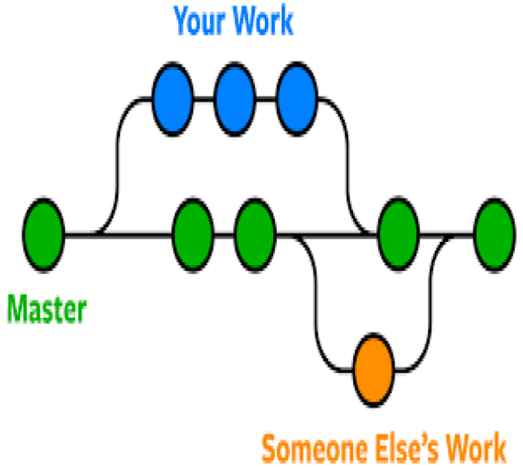

What is a branch in Git?
A branch in Git is a seperate workspace used to experiment or make changes without affecting the main project.
Back
A branch in Git is a seperate workspace used to experiment or make changes without affecting the main project.
Back